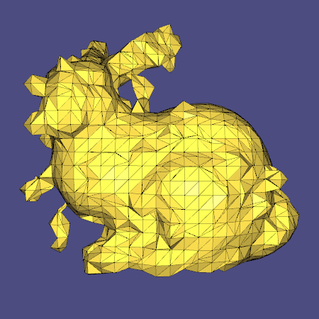

Structure-aware Surface Reconstruction with Sparse Moving Least Squares
from Alexander Lelidis supervised by Cengiz Oztireli and Marc Alexa
Reconstructing the surface underlying a given point cloud is a fundamental problem in geometry processing. Moving least squares solves this problem efficiently using local fits. However, locality comes at the expense of losing a global view of the geometry, leading to inferior results when there is missing data or significant amount of noise or outliers. Global methods are more robust, but they are expensive to compute. In this thesis, we will combine global and local methods in an efficient manner by using learned local geometry bases and sparse moving least squares fits.

Moving least squares (MLS)
The whole algorithm will build on moving least squares defined in the following part. The input will be a point cloud of a scanned real world object, optionally with assigned normals. Further our input point cloud will be called \(P \). We want to compute an implicit function, which zero set defines the surface of the scanned mesh. By its nature the function should be globally defined. For every input point \(x_i\) with \( i \in [0 ... N]\) the function should minimize the error to the assigned function values \(f_i\) in a least square sense. $$ LS_{error} = min \sum\limits_0^N || f(x_i) - y_i ||^2 $$ The function is taken from a given polynomial space of degree m. The function can be written as $$ f(x) = b(x) \cdot c $$ where \(b(x)\) is a vector of basis elements evaluated for the given point \(x\). For example for degree 1 b equals \([1, x, y, z]^T\). c are the unknown coefficients, which should be minimized. To be able to reduce the influence of points which are far away from our current inspected point \(x\) we use weights, depending on the distance between \(x\) and \(x_i\) and we only use the k-nearest neighbours for the computation. $$ MLS_{error} = \min \sum\limits_{i = 0}^{k} \theta(||x - x_i||) || f(x_i) - y_i ||^2 $$ The scanned points \(x_i\) should lay approximately on the surface, so the result of the implicit function should be zero at this points.
Using a dictionary for the coefficients c
Our approach is to replace the coefficients c by a dictionary \(D\) multiplied by a dictionary coefficients vector \(\alpha\). In the beginning \(D\) contains some polynomials, which are usually good for covering features of the surface. This dictionary will also be trained by the K-SVD algorithm to get better fitting elements.
Finding the optimal \(\alpha\)
To improve the performance and reduce the noise we want to use a sparse representation for \(\alpha\) according to the L1-Norm. Typically surface region from real world data can be covered by a few underlying basis or in our case dictionary elements. This fact we want to explore, by using a sparse representation. $$ f(x) = \sum\limits_{i = 0}^m c_i b_i(x) = c^T b(x) = (D \alpha)^T b(x) $$ with the constraint that \(\alpha\) should be sparse according to some threshold \(\epsilon\) and bigger than zero to avoid the trivial solution. $$ ||\alpha||_1 < \epsilon \wedge \alpha \neq 0 $$ However the final term which should be minimized is $$ \min\limits_{||\alpha||_1 < \epsilon \wedge \alpha \neq 0}^{} \sum\limits_{i = 0}^{k} \theta(||x - x_i||) || \alpha^T D^T b(x_i) - y_i||^2 $$
Basic implementation in C++
I started implementing a basic moving least squares according to Algebraic Point Set Surfaces . To not reinvent the wheel I use the Eigen library for linear algebra and libigl for basic visualization and simple mesh processing algorithms like Marching cubes.
Current features
The current project does not have a lot features, but there still are few to mention.
| Basis | There are polynomial basis implemented with of degree N. They could be changed in the GUI. |
| Weights | The weighting function is the Wendland function. The wendland radius is computed by the length of the diagonal of the bounding box of the geometry and a parameter specified by the user (Default 0.1). The parameter could also be changed in the GUI. |
| Marching Cubes | The resolution of the grid for the Marching Cubes algorithm could also be set in the GUI. |
| PCA | Some meshes are not really aligned the Euclidean axis, it makes sense to get the principal components and transform all input points and normals to get better results with the Marching cubes algorithm. The option could also be set in the GUI |
| Additonal points | Sometimes it is useful to create additional points which serve as constraints. The points are generated in the
following way: Compute a \(\epsilon \) according to the bounding box For every point \(p_i\)
|
| Solver | The current solver minimizes L2- Norm without any constraints. As a solver I use the ldlt solver from Eigen. |
Results
The following images were created using 1000 points on the Stanford bunny. As a resolution for the Marching cubes I used 20 x 20 x 20 and a wendland radius of 0.1.
Comparison between degree 0 and 1
Comparison between degree 1 and 2
Next steps
The next steps are to add a solver with a L1-Norm constraint. Implement a few more basis and weighting functions.
Testing the open source library KL1p
To achieve a sparse signal representation we want to min the following energy: $$ min ||Ax - y||_2 s.t. ||x||_1 < \epsilon $$ To compute this nontrival minimization we are planing to use the KL1p library, which provides a few iterative solvers. In the next part we are going to compare a 256 parameter long signal \( x_0 \), which contains 25 non zero elements with the reconstructed one. Therefor we create a random gaussian Matrix \(A^{128 \times 256} \) with a mean of 0 and deviation of 1, which we are going to use to create a measurement vector \(y = Ax_0\). The following images compare the original signal \( x_0 \) to the reconstructed signal by using different solvers. For OMP, ROMP, CoSaMP, SubspacePursuita and EMBP we set \(\epsilon = 0.1 \cdot n \)
Comparison between orignal and BasisPursuit
SNR=111.85 - Time=86ms - Iterations=11
Comparison between orignal and OMP
SNR=108.2 - Time=18ms - Iterations=25
Comparison between orignal and ROMP
SNR=9.1739 - Time=2ms - Iterations=3
Comparison between orignal and CoSaMP
SNR=92.607 - Time=9ms - Iterations=4
Comparison between orignal and SubspacePursuit
SNR=51.934 - Time=13ms - Iterations=5
Comparison between orignal and SL0
SNR=62.913 - Time=86ms - Iterations=12
Comparison between orignal and AMP
SNR=75.745 - Time=6ms - Iterations=71
Comparison between orignal and EMBP
SNR=76.491 - Time=6ms - Iterations=56
With the aim to compute the results faster, also for bigger meshes, I started to consider ways to optimize my basic framework. In the end of the section you can see a bar chart which compares the new implementation with the old one without any optimization in terms of run time.
KD - Tree
As mentioned in the previous section, I added a kd- tree. In the old framework I used simple uniform binning, which I replaced with the kd- tree. The kd tree is constructed during the initialization and is quicker for queries on large datasets, but also works well on small ones.
Precomputing the basis
In the olf framework I compute the basis matrix every time I solved the MLS system. I think it would be faster to precompute the basis for every vertex as a preprocessing step. This would be a big speed up if the grid for the marching cubes is really dense and surface points get used multiple times.
Thread building blocks
The last optimization I did was to evaluate the MLS function for every grid point in parallel. Because the grid point evaluation is independent of other grid points, it could be easily parallelized.
I implemented the algebraic point set surface reconstruction algorithm proposed by Gael Guennebaud and Markus Gross in 2007. The main advantage of the algorithm is the fact that it takes also the surface normals into account. Basically it says that the gradient of the implicit function should be aligned with the normal. A nice side effect is that we get the mean curvature for free, which corresponds to the radius of the fitted sphere. In the end we the get following linear system of equations:
$$ W(x) = \begin{bmatrix} \ddots & & & & & \\ & \omega_i(x) & & & & \\ & & \beta \omega_i(x) & & & \\ & & & \ddots & & \\ & & & & \beta \omega_i(x) & \\ & & & & & \ddots \end{bmatrix} , B(x) = \begin{bmatrix} \vdots & \vdots & \vdots \\ 1 & p_i^T & p_i^T p_i \\ 0 & e_0^T & 2 e_0^T p_i \\ \vdots & \vdots & \vdots \\ 0 & e_{d-1}^T & 2 e_{d-1}^T p_i \\ \vdots & \vdots & \vdots \end{bmatrix}, \alpha = \begin{bmatrix} \vdots \\ 0 \\ e_0^T n_i \\ \vdots \\ e_{d-1}^T n_i \\ \vdots \end{bmatrix} $$where d is the dimension and \(e_i\) represents the i unit basis vector of our coordinate system.
Results
In the following section I am going to compare the result of the APSS algorithm and a least squares fit with plus-minus epsilon constraint points.
In this section I tried to use some of the sparse solvers from the KL1p library for our minimization problem. It makes no sense to apply the \(L_1\) norm to the APSS algorithm, because the coefficients vector only has 5 entries, which is not enough. So I decided to use the high order polynomials in hopes that they would be sparse and achieve reasonable reconstructions. In the following images I used polynomials of degree 8 and the 1.000 points sampled from the Stanford bunny without any noise added.
Orthogonal Matching Pursuit (OMP)

Regularized OMP
Subspace Pursuit
Smoothed \(L_0\)
- 
As we can see, all \(L_1\) solvers produce the same result, which is nice, because they all solve the same problem. Still the result is much worse than the result from the APSS algorithm. I think the main reason for this is that polynomial basis are not sparse enough in comparison with the length of the signal.
Since the reconstruction with polynomials did not work so well, I guess that coefficients vector alpha is not sparse enough. To get a sparser vector we need a different set off basis, which represents the surface better. A possible solution would be to use a set of Gaussians on the local tangent plane and try to create the surface as a local height field.
1D function reconstruction with Gaussian RBF
To get a better feeling for the \(L_1\) solving algorithms and their parameters I will start with the 1D case and a trigonometric function. At first I will solve the following \(L_1\) minimization with quadratic (\(L_2\) norm) constraints. $$ min ||\alpha||^2_1 \; s.t.||K\alpha - f||^2_2 < \epsilon\; $$ where \(K\) is the radial Basis matrix, defined as \(K_{i, j} = e^{\frac{-||x_i - x_j||}{\sigma^2}}\). In the following graphs I create 64 uniform distributed points in the interval from 0 to 6 and used \(\sigma^2 = 0.07\) and \(\epsilon = 1e-3\) for the RB matrix. As a signal I used the following trigonometric function \(f(x) = 2 \sin(3x) + 8 \cos(\frac{x}{2})\)
We can clearly see the reconstructed signal matches the original quiet well. The introduced error by the reconstruction is \(1.0e-06\) and the reconstruction took 0.027668 seconds.
This comparison shows the 64 coefficients for the RBF. The first image shows the coefficients if we solve the problem with a simple least squares solver and the second image shows the coefficients if we use the sparse solver. It is visible that the small coefficients in the middle of the signal converge to 0.
2D function reconstruction with Gaussian RBF
The 1D function reconstruction worked well, so the next step is to raise the dimension and check if the performance is still good. A big problem in the 1D was to find the right parameters for the \(L_1\) solver, which is very sensitive. However, for the 2D reconstruction I used again a trigonometric function, this time in 2D: $$ f(x, y) = \frac{\sin(\sqrt{x^2 + y^2})}{\sqrt{x^2 + y^2}} $$ To create the following graphs I create a meshgrid from -10 to 10 with 4096 uniformly distributed samples and \(\sigma^2 = 0.2\) and \(\epsilon = 1e-3\) for the RB matrix.
This comparison shows the orignal signal and the sparse signal reconstruction, which match quiet well. The reconstruction took 167.298803 seconds and the total error is \(1.0e-03\).
This comparison shows the 4096 coefficients for the RBF. Again we compare the least squares solution with the sparse one. For the given parameters the solver converges to the least squares solution. The total difference between the coefficient vectors is only 0.0682.
Because the \(L_1\) minimization with quadratic (\(L_2\) norm) constraint (L1QC) wasn't really stable and converged for the wrong parameters to the least squares solution. I tried to solve the problem with a different approach, using the following problem definition: $$ min ||K\alpha - f||^2_2 + \lambda ||\alpha||_1 $$ where \(\lambda \ge 0 \) is the regularization parameter.
1D function reconstruction with Gaussian RBF
Again we start with the 1D case and the same function defined in the section above. In terms of parameters, I used exactly the same ones as before, the new parameter \(\lambda\) is 0.000001.
We can clearly see the reconstructed signal matches the original quiet well. The introduced error by the reconstruction is 0.0109 and the reconstruction took 2.237272 seconds. So the reconstruction is a little bit slower as the L1QC method, also the error is higher, but the method is much more stable and finds a solution most of the time.
On the right hand we compare the L1QC solution with the LSL1 solution. In the background we see the LS solution. We observe that the LSL1 method even for such a small lambda produces a sparser solution than the L1QC method.
Now we directly compare the two coefficient vectors on a smaller scale.
Making noise
As we could see the reconstruction worked well. Now we would like test the behavior of the algorithm with added Gaussian white noise.
Therefor we created a noise vector \(v\) with a \(SNR = 20\) and added it to the signal \(f_{Noisy} = f + v\). Now we tried to reconstruct the original signal with Least squares and with LSL1.
We can observe the expected behavior, that the least squares algorithm tries exactly to match the data. But in our case (noisy data) we don't what to fit the data exactly.
The LSL1 algorithm visibly performs better. Instead of fitting the data exactly the algorithm is forced by the parameter \(\lambda = 0.8 \) to compute a sparse solution, which reduces the noise level. The error of the reconstruction is 2.3469 which is nearly the half of the error of the least squares reconstruction (4.5274)
Playing with \(\lambda\)
In this section I tweak the parameter \(\lambda\) and computed the sparsity (\(L_1\)) of the coefficient vector and the resulting error. The parameter is uniformly sampled from 0.0001 to 0.01.
2D function reconstruction with Gaussian RBF
Since the LSL1 algorithm achieved so promising result in the 1D case, we wanted to test the robustness and the resulting reconstructions in 2D using the same function as in the previous section. The following animation shows the results with increasing \(\lambda\) values.
\(\lambda = 0.1\) err = 0.2772
\(\lambda = 1.0\) err = 1.5574
\(\lambda = 2.5\) err = 2.8596
\(\lambda = 5.0\) err = 3.5322
The charts show us that the LSL1 algorithm is a promising candidate for the 3D case.
We introduced a new surface reconstruction technique which combines classical dictionary learning and compressive sensing. First, the method computes a grid containing the signed distance to the scanned data and extracts the zero level surface. Our approach makes recon- struction with undersampled or noisy point clouds possible. In chapter 1 we started with a quick introduction and explained the importance of surface re- construction generally. In chapter 2 we gave a brief overview of the related work in the field of surface reconstruction, compressive sensing and dictionary learning. We discussed the advan- tages and disadvantages of the state-of-the-art methods and classified them into categories. In the next chapter we explained the theoretical background of our new reconstruction technique and step by step built the final minimization formulation. In our experiments we compared different sparse solvers in terms of run time, reconstruction error and sparsity. We found out that the L 1 regularized least squares minimization mostly fitted our needs. We started to test the reconstruction from the one dimensional to the three dimensional case and documented prob- lems we encountered during this process and how we solved them. Furthermore, we did a lot of testing to find the best relationship between the available parameters and found those few intuitive ones for the user. Finally, we can say that our method can keep up with the state- of-the-art methods with some requirements, like remembering and using the local coordinate frames. We contribute a modular reconstruction framework implemented in C++, which allows easily to change or extent different parts, like the weighting function or the solver, from the reconstruction process. Future work tackles the problem of the local frame approximation. To get more stable recon- structions, the local frames should not vary much if the number of points is decreased or noise is added to the model. A possible way would be to take the normals into account and use them to compute the local coordinate system. Furthermore, the neighbourhood querying needs to be improved, since in thin areas we get very spiky height fields resulting from the fact, that the local surface is not topologically equal to a disc. This problem could be solved by taking the nearest point as a start point and using very small sphere radii for the queries to incrementally add points to the local points, if they are still in the demanded search radius. This approach would solve the problem, but also drastically increase the run time. Another suggestion to this problem would be to classify this situation as a problematic scenario and only use the samples of the closer side. However, also in sharp regions like in corners or edges the method fails to represent those and causes oversmoothing. To tackle this problem a different set of basis could be used, which can represent sharp features better than Gaussians. Finally, we want to create a better dictionary, which is constructed with training data from a big amount of different point clouds with different features and find out if we could get rid of some problems by optimizing the used dictionary.